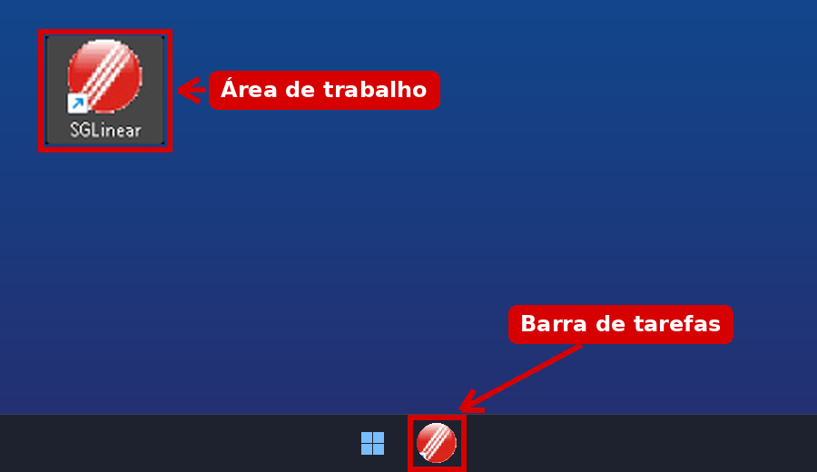
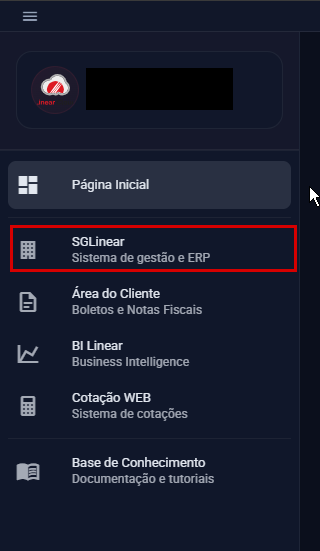

Como acessar o Linear (computador da loja)
O Linear agora funciona na nuvem. Para entrar, use o ícone do Linear do seu computador.
Passo a Passo:
- Passo 1: Dê dois cliques no ícone do Linear na área de trabalho, ou dê um clique no ícone do Linear na barra de tarefas (embaixo).
- Passo 2: Vai abrir uma tela escura com login e senha já preenchidos. Clique no botão vermelho "Acessar Portal".
- Passo 3: No menu escuro da esquerda, clique em "SGLinear - Sistema de gestão e ERP". Aguarde a tela do Linear abrir e entre com o mesmo usuário e senha que você já usava no Linear.



Atenção: se o login ou a senha estiverem vazios, feche a janela e abra o ícone do Linear de novo. Se não resolver, chame o suporte.
Nota: Se o login ou a senha não funcionarem, ou se o SGLinear não abrir, avise o suporte no Grupo do TI.